Our story
Words needed — Gabby is writing this one. Two or three paragraphs sit here, beside the stamps.
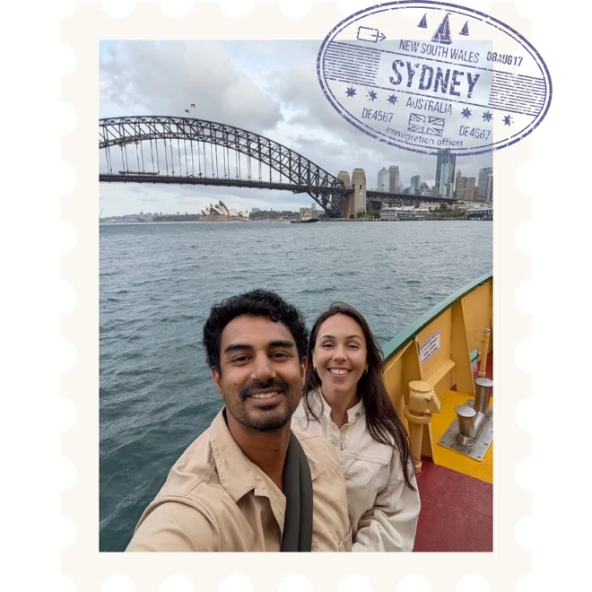
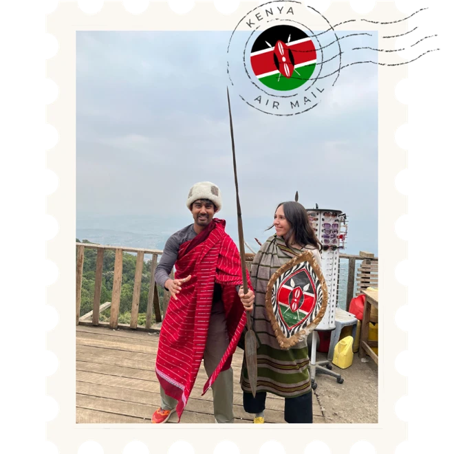
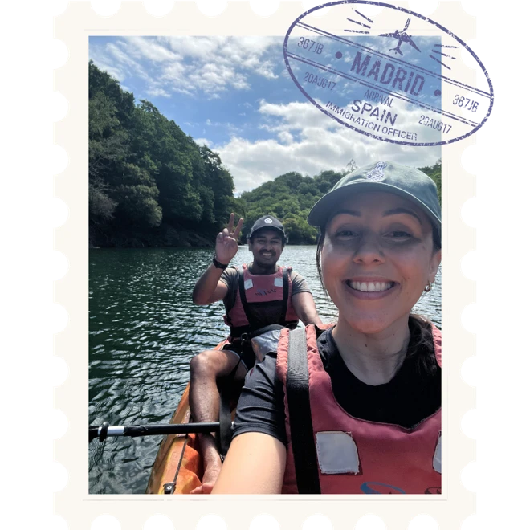
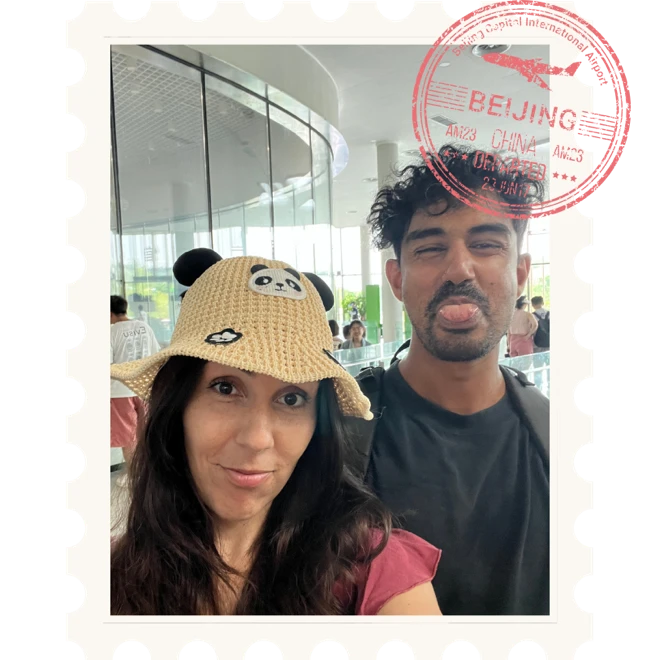
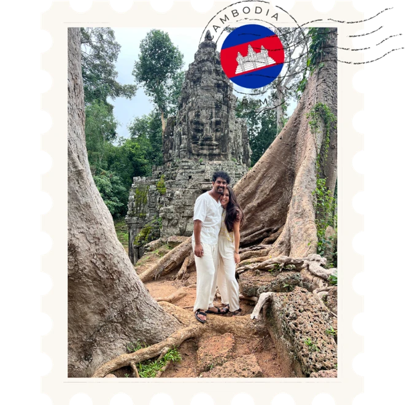
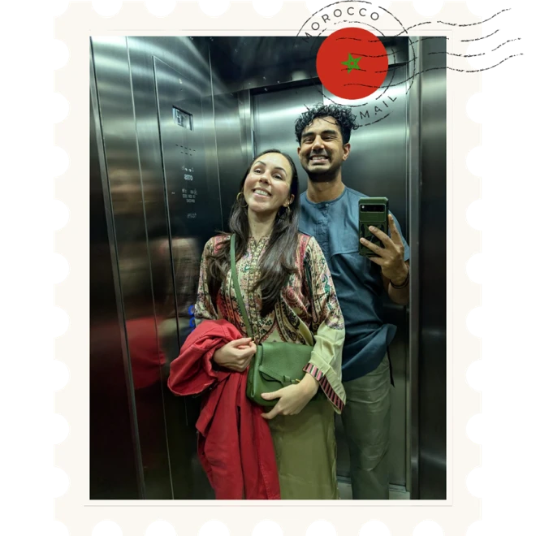
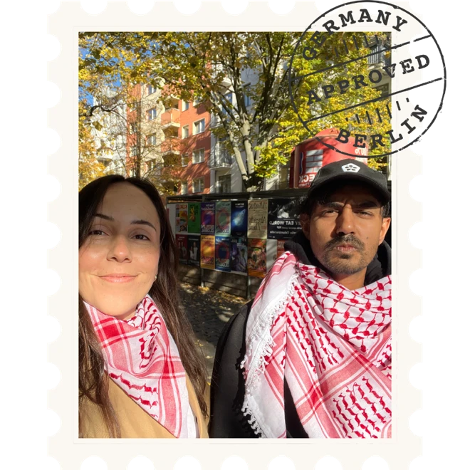
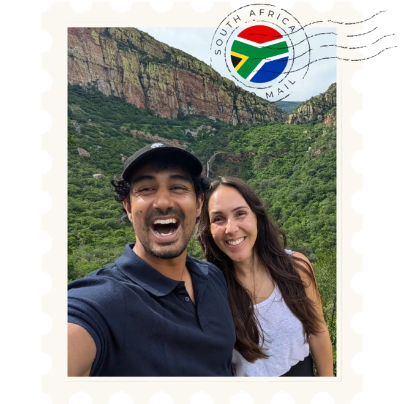
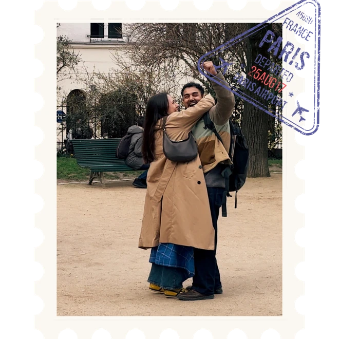

Disclaimer: This is a real image from the wedding venue. While we can’t guarantee your safety, we can guarantee a wild time.
Sunday, 14 March 2027
Tuesday, 16 March 2027
Saturday, 20 March 2027
Words needed — Gabby is writing this one. Two or three paragraphs sit here, beside the stamps.









Event 01
An ‘adda’ under the mountain
An adda is a Bengali tradition — essentially the art of hanging out. Think long, easy, unstructured conversation with good people, unhurried chats that go wherever they go. That’s exactly the spirit we want to start the week with: a mountain-side picnic where everyone can meet, swap stories, play games, and soak in the glorious surroundings. We’ll hand out your Holud outfit here (for the next event), so please attend if you can!
Event 02
Golden and ungovernable
A holud (literally meaning ‘turmeric’, and ‘yellow’) is a centuries-old Bengali tradition to prepare the bride and groom for marriage. Over time, the holud grew to include rituals that made it (arguably) the most fun and vibrant event on the wedding calendar. Expect skits and dancing from those who’ve known us for far too long. This is the distinctly Bengali event, but we’ll throw in a South African twist or two.
Norval Foundation is one of Cape Town’s newer art museums, hosting modern and contemporary work from across Africa and its diaspora, set in gardens built around an indigenous wetland, with mountains draped across the background. We’ll be taking over the amphitheatre and grounds for the day. If you arrive a little earlier, you are welcome to visit the gallery.
Event 03
A wild dream at the edge of the world
For the big day, we’re leaving the city behind and heading into nature. The ceremony and reception will be held just outside of Oudtshoorn, at Buffelsdrift, a game lodge tucked into the quiet drama of the Karoo. We’ll say ‘I do’ in the bush and then celebrate into the night with the wilderness all around us. We can’t wait!
Wedding logistics
The wedding is a four to five hour drive outside of Cape Town, and you have two options for transport.
If you’re feeling extra adventurous, we recommend hiring a car and taking a road trip to Oudtshoorn. Since the Holud is on Tuesday, you have Wed/Thu/Fri to get there. There are two very beautiful routes to choose from:
If you would like to keep it simple, we will be arranging buses for transit between Cape Town and Oudtshoorn on Friday the 19th, and back again on Sunday the 21st. For guests staying in Oudtshoorn, we will also arrange transport to and from the venue on the Wedding Day.
Just let us know in the RSVP which you would prefer.
Wedding logistics
Beds are arranged differently depending on your invitation, so this bit sits behind a password. Pop in the one we sent you and we’ll show you yours.
It’s the same password we sent with your invitation. If you can’t find it, you can ask us for another on the next page.
Sign inOur beloved family! Accommodation is on us for the wedding weekend!
Our nearest and dearest! We would love to invite you to stay at the venue with us on the Friday and Saturday night. You’ll also have the option to extend to Sunday night if you would like to soak up more of the bush before heading home.
We’ll be hosting you at Buffelsdrift (the venue) for Friday and Saturday night, and you’ll have the option to extend to Sunday night as well to soak up more of the bush before heading home.
Saturday is the big day, so we will host a relaxed braai on the Friday evening for all those staying at the venue. A safari drive is included in your stay, and the lodge also has a spa, a pool and a few extra wildlife experiences if you’d rather swap out the standard safari for something else (like an elephant or lion experience).
Accommodation is roughly €300 per person for the Friday & Saturday night (depending on your room). This includes breakfast on both days, a safari drive, and a simple lunch on the wedding day. Also, since Saturday is the big day, we will host a relaxed braai on the Friday evening for all those staying at the venue. The lodge also has a spa, a pool and a few extra wildlife experiences you can sign up for or swap out for the standard safari.
Most of the rooms are for 2 persons sharing. There are also five 4-person rooms, each with 2 bedrooms. If you would like to / are open to staying in one of these with another couple, please let us know. If you have kids, we can add a small bed to your room (kiddies 4–13 stay at half price, kiddies 3 and under stay for free). We will collect the relevant info in the RSVP, but also feel free to reach out with any questions! Once the RSVPs and rooms are confirmed, we will send through a payment link.
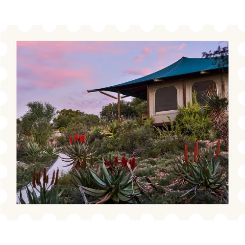
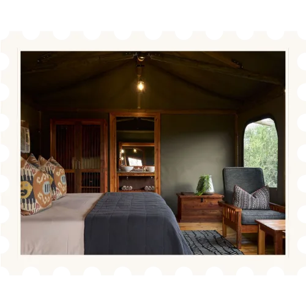
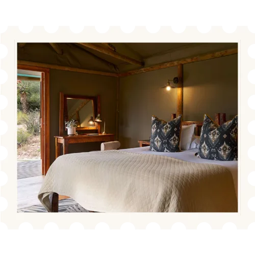
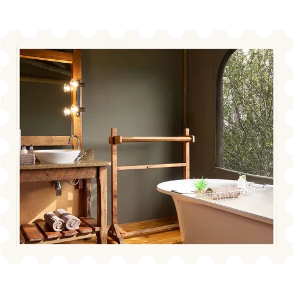
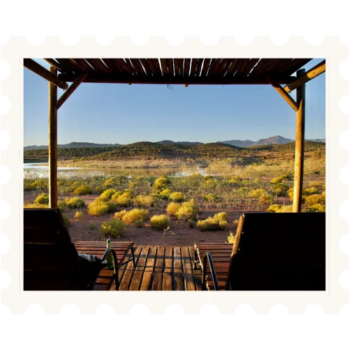
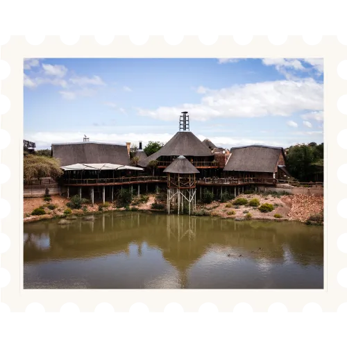
Unfortunately, the wedding venue can’t accommodate all our guests, but they are very happy to organise safari drives for any day visitors. If you are interested in this, let us know in the RSVP, and we will share pricing and options.
Prices are what Booking.com showed for a double room for two adults over the wedding weekend, Friday 19 to Sunday 21 March 2027, and they move. Book it yourself, and book it early.
Practical
For those travelling from afar – Cape Town in March is very pleasant. Summer’s edge has softened and it gets a little cooler in the evenings. The Karoo will be a bit warmer during the day but also cool off marvellously in the evening.
Relaxed garden party vibes. Think breezy dresses, linen, relaxed tailoring and sandals. It’s a garden, on grass, in the afternoon — so bring shoes that agree with that.
Traditional Bengali, and we’re providing it. For the ladies, saris or salwar kameezes in shades of pink. For the gents, kurtas in shades of green. You’ll request your size and preferences in the RSVP, and we hand the outfits out at the picnic on the 14th.
For shoes, guys are encouraged to wear sandals. Ladies, sandals are also great, and heels are welcome, but note that we’ll be on grass for most of the event.
You’ll need to provide your own top to go underneath, as we can’t get these all made to your measurements. It needs to be something fitted and preferably cropped so the sari can sit well. An actual crop top will work wonders, and you’re welcome to get it in any colour you want, but shades of pink, yellow, orange or green would be ideal.
We’ll provide instructions on how to put the sari on, and will have expert help available on the day if you need it.
Any questions about any of this, just pop us a message.
Formal. Elegant and inspired by our surroundings. We’d love earthy, elemental tones but honestly there are no strict rules. Please wear what makes you feel fantastic.
Everything else
Of course! Kids are more than welcome to all the events. There’s plenty of room to run and play at the picnic and holud, and the game lodge is about as good a place as a child can hope to spend a weekend.
Please add them as guests in the RSVP so we can plan accordingly.
We know this entire wedding week is a big adventure and honestly, your presence is the best gift you can give us — we really don’t expect anything else!
That said, we know some people are adamant about these things, so if you would really like to get us a gift then a contribution to our Life Fund would be very appreciated!
Most nationalities will not require tourist visas, but please do check!
Uber is affordable and a great option for getting around the city. You can even take an Uber to nearby towns like Stellenbosch and Franschhoek. We normally just use Uber while we’re in Cape Town, but renting a car is also cheap and makes life easier, especially if you want to explore a bit.
For the picnic and holud, the easiest option will be to be based out of Cape Town. A few areas worth noting:
One last thing
He took Gabby once, and we got her back. Now he’s waiting on the road into Oudtshoorn with the whole flock behind him — and there is a crocodile pit at the end of it.
Jump the flock, shove him into the pit, and get rid of Bibi once and for all!
Press Run to play here, or open it full size — better on a phone.